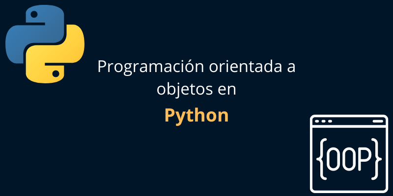

La programmation orientée objet, ou POO, est un modèle de programmation qui repose sur le concept de classes et d'objets. Elle est utilisée pour structurer un programme logiciel en éléments de code simples et réutilisables, généralement appelés classes, qui sont utilisés pour créer des instances individuelles d'objets. Il existe de nombreux langages de programmation orientés objet, notamment JavaScript, C++, Java et Python.
Par exemple,
Python, qui est un langage de programmation polyvalent populaire, permet de coder en utilisant des techniques procédurales, orientées objet ou fonctionnelles. Java, un autre langage populaire, est exclusivement orienté objet.
L'approche orientée objet se concentre sur les objets qui composent le système.
Un objet est tout ce qui peut être nommé et décrit. Les objets sont des « choses » qui sont modélisées dans des programmes et, par conséquent, le but d'un programme orienté objet est de représenter le monde réel en code.
En effet, le terme « objet » dans la programmation orientée objet représente une manière spécifique d'organiser le code et peut être défini, techniquement, comme « une entité qui englobe à la fois les données et le comportement ». Cela signifie que toutes les données et toutes les procédures/fonctions d'un système appartiennent à un ou plusieurs objets. Dans la programmation orientée objet, les objets collaborent les uns avec les autres, en envoyant et en recevant des messages.
Quel est l'objectif de la programmation orientée objet ?